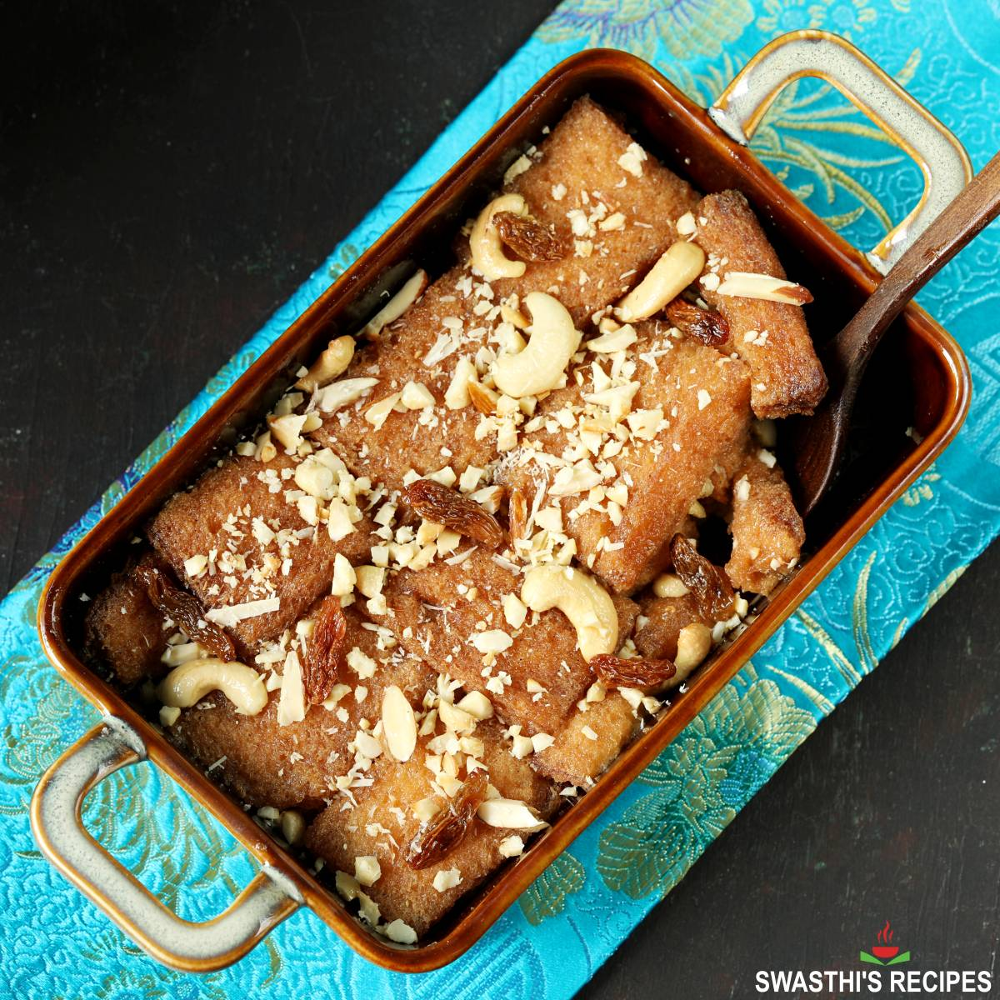
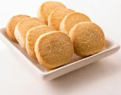

Double Ka Meetha
Sweet bread dessert soaked in milk and dry fruits. Flavored with saffron and cardamom. Soft, rich, and indulgent. A must-have Hyderabadi dessert.

Irani Chai
Strong, creamy tea with a unique taste. Served hot in traditional cafés. Best enjoyed with biscuits or bun maska. A daily ritual for Hyderabadis.

Osmania Biscuit
Crispy, mildly sweet, and slightly salty biscuit. Perfect companion for Irani chai. Loved by locals for generations. A simple yet iconic Hyderabad snack.